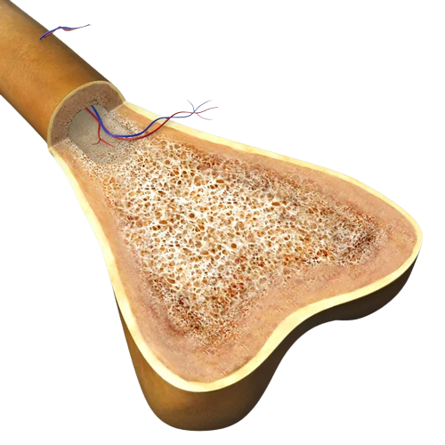

ESQUELETO HUMANO
Está compuesto por un total de 206 huesos...
FUNCIONES
Sostiene y protege los tejidos blandos y los órganos internos del cuerpo...
CLASIFICACIÓN
Los huesos se clasifican en 5 tipos diferentes...
ESTRUCTURA
Están compuestos de tejido óseo y tejido cartilaginoso...
PARTES
Se divide en 2 partes principales...
Los huesos están compuestos de tejido óseo y tejido cartilaginoso y se dividen en tres partes:
°diáfisis (la parte central del cuerpo del hueso)
°epífisis (los extremos en los casos de huesos largos)
°metáfisis (la parte intermedia del hueso).
Tejido óseo: es el componente más importante del hueso, el 70%, está compuesto por hidroxiapatita, una sustancia extracelular resistente que segregan los propios huesos, valiéndose para ello del calcio y del fósforo que almacenan; el resto del tejido óseo se compone de colágeno, en un 30%, y de células óseas, los osteoblastos, las células madre y los osteocitos, en un 2%.
Cavidad medular: es la parte ‘vacía’ del hueso, donde está la médula ósea, normalmente se localiza en la diáfisis.
Endostio: es una membrana fina compuesta por tejido conjuntivo. Su función es tapizar la parte interna de la cavidad medular de los huesos largos.
Arteria nutricia: Son las arterias que hacen llegar sangre a la médula ósea de cualquier hueso largo.
Periostio: es una membrana de tejido conjuntivo que se adhiere a la parte exterior de los huesos y cuya función es que estos se nutran y se regeneren.